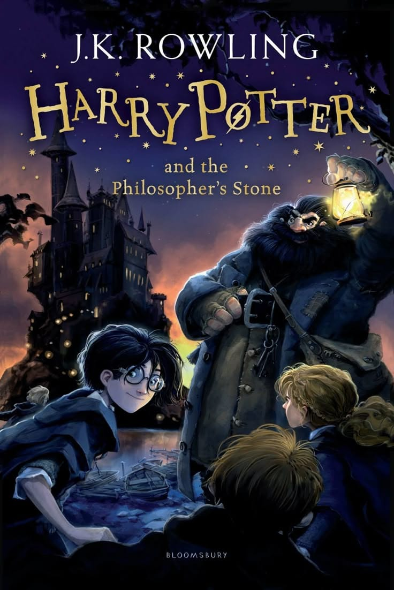
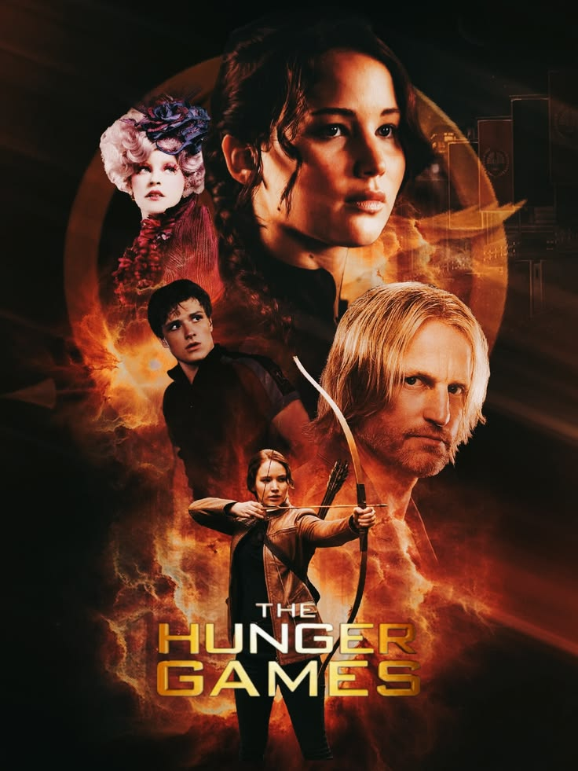
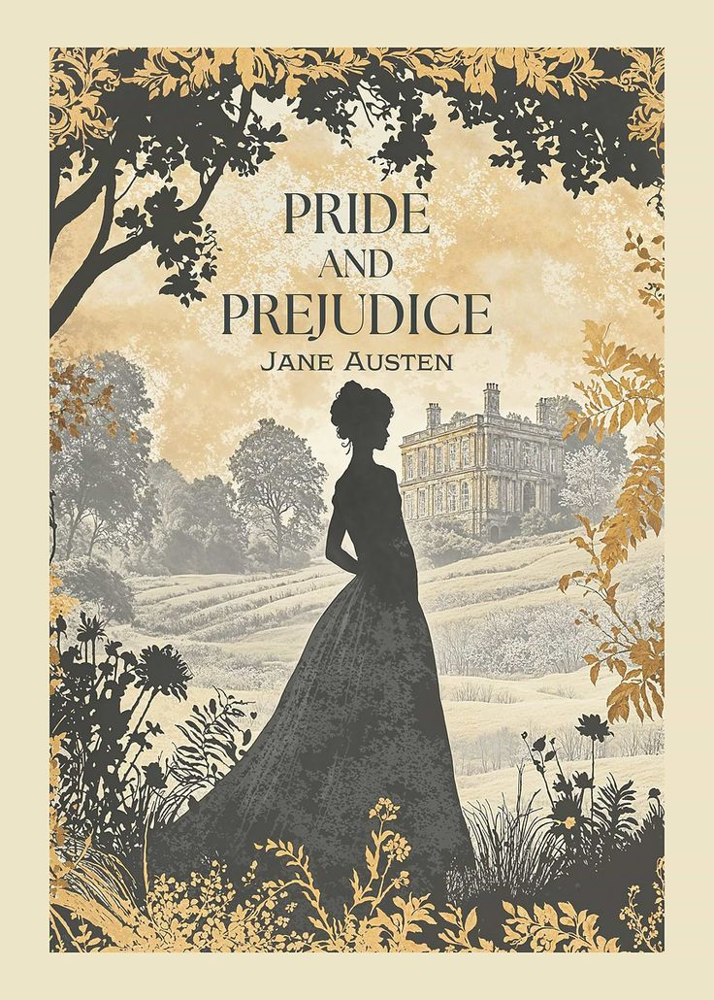
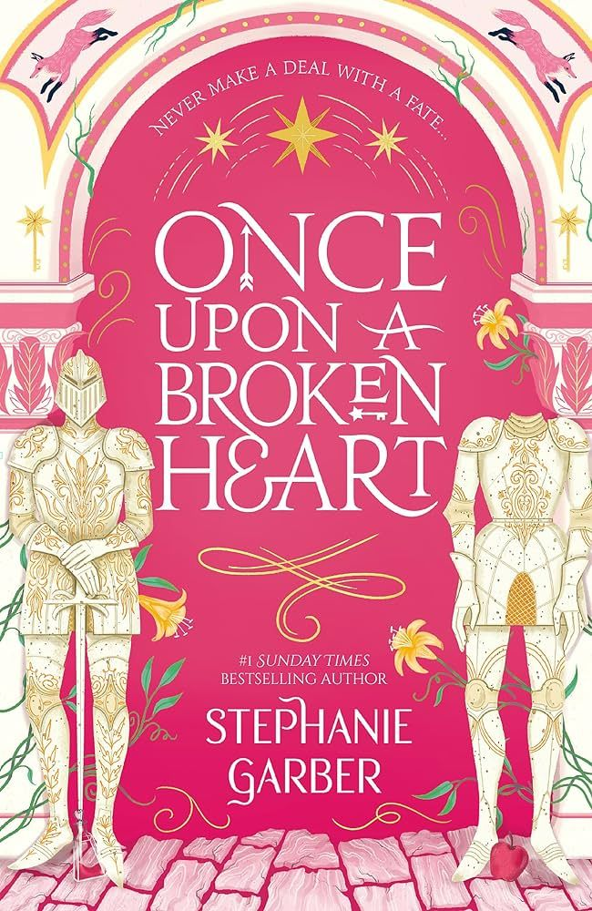
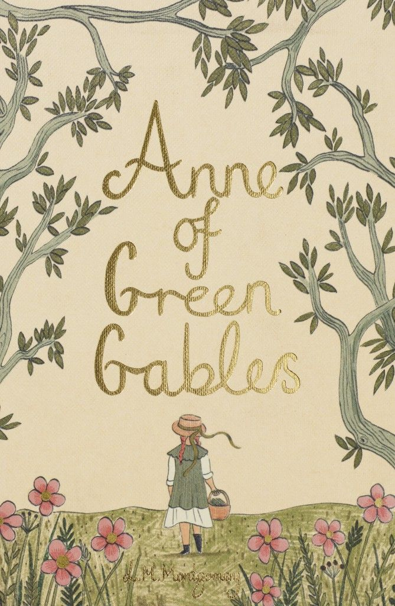

Harry Potter e a Pedra Filosofal
Obra que marcou gerações de leitores e se tornou um fenômeno cultural mundial, incentivando o interesse pela leitura entre jovens.
literatura • imaginação • memória
Livros preservam conhecimentos, emoções e diferentes formas de enxergar o mundo.
A literatura é uma importante forma de produção cultural porque transmite conhecimentos, valores, emoções e diferentes visões de mundo. Os livros podem preservar a história de um povo, incentivar a imaginação e influenciar gerações, tornando-se parte do patrimônio cultural da sociedade.
Livros conseguem atravessar décadas e até séculos, permanecendo relevantes para novas gerações. Muitas obras se transformam em fenômenos culturais, influenciam filmes, séries, músicas e até a forma como as pessoas enxergam o mundo.

Obra que marcou gerações de leitores e se tornou um fenômeno cultural mundial, incentivando o interesse pela leitura entre jovens.

Livro que conquistou milhões de leitores ao abordar desigualdade social, poder e resistência, mostrando como a literatura pode promover reflexões sobre a sociedade.

Um clássico da literatura que continua influenciando leitores e adaptações modernas, demonstrando a permanência das grandes obras.

Exemplo de literatura contemporânea que conquistou muitos jovens leitores por sua mistura de fantasia, romance e elementos dos contos clássicos.

Obra conhecida por seus temas de crescimento pessoal, amizade e imaginação, permanecendo relevante mesmo após mais de um século.

Um dos maiores clássicos da literatura brasileira, importante para a preservação da cultura e da identidade nacional.
A literatura preserva memórias, transmite conhecimentos e aproxima pessoas de diferentes culturas. Cada livro é um pequeno arquivo cultural que guarda emoções, ideias e experiências humanas.